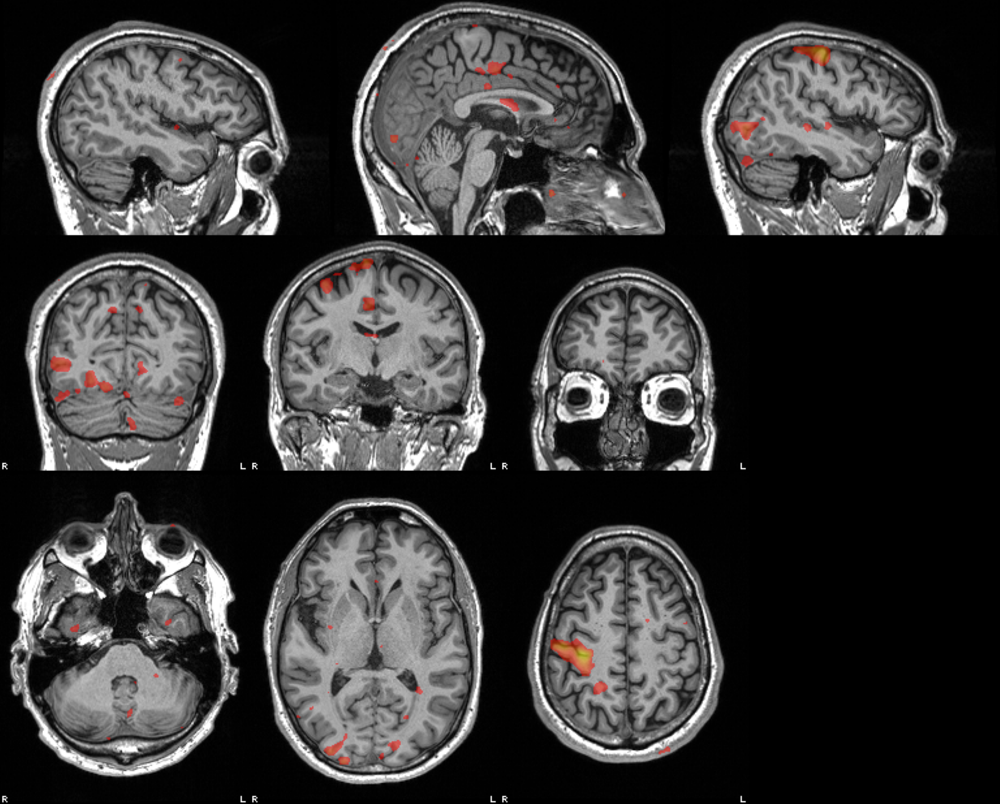
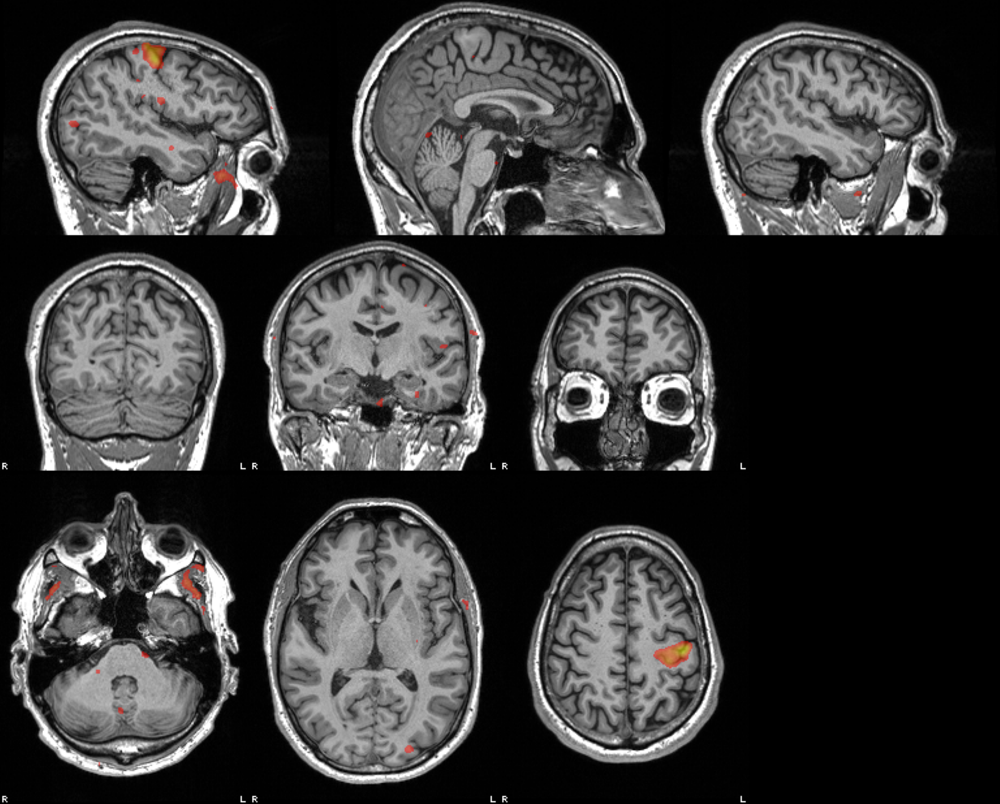
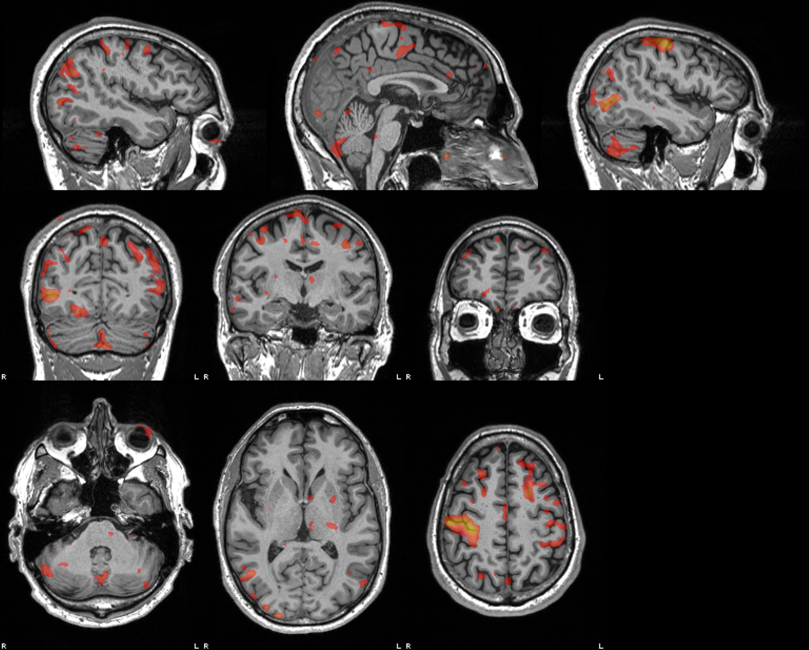
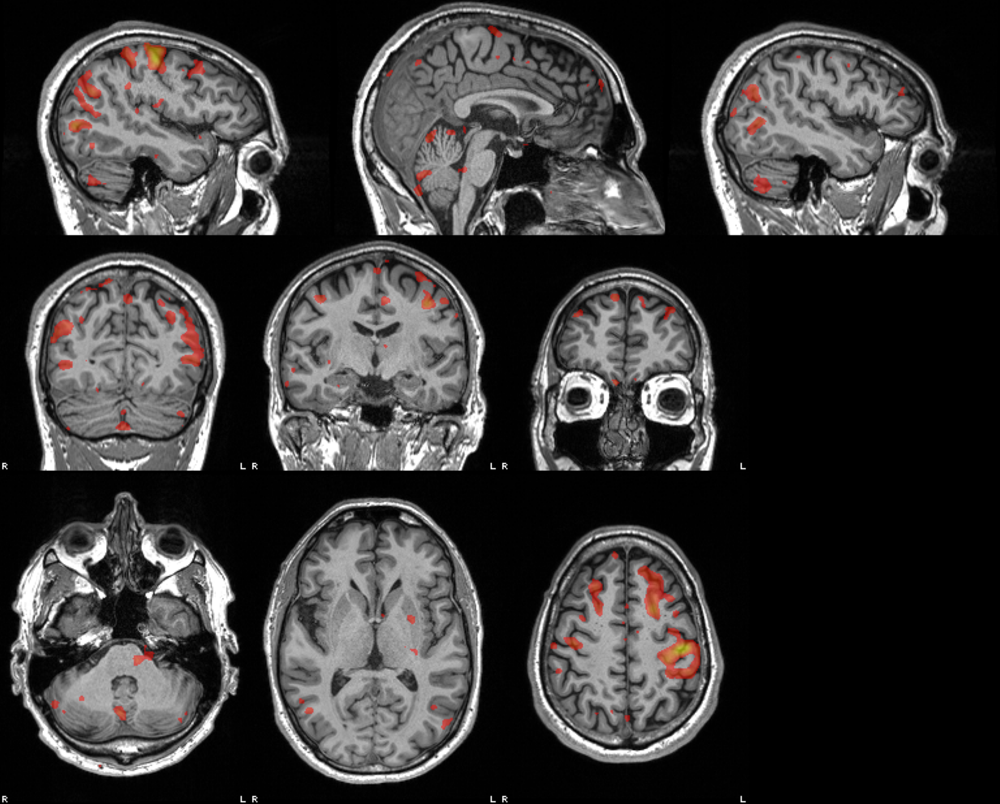

Methods
This run has 3 echoes (TE 15.2, 35.32, 55.42 ms). They were combined voxelwise into one series by T2*-weighted optimal combination (Posse et al., 1999) before any other step; motion correction, distortion correction and the GLM all operate on that combined series, and the echoes are not modelled separately. The echoes' phase gave a per-frame field map (MEDIC; Van et al., 2023) used for distortion correction. Distortion correction: MEDIC (3-echo phase, per frame) + SynthSR residual warp. Motion correction, distortion correction and the BOLD→T1w registration were applied in one interpolation.
The preprocessed series in T1w space (150 volumes, TR 2 s) was smoothed with a 5 mm FWHM Gaussian. 1 non-steady-state volume was dropped from the model. Design matrix: left and right block regressors (onsets and durations from the events file) convolved with a double-gamma HRF (SPM canonical: gamma shapes 6 and 16 s, undershoot ratio 1:6) and sampled at each volume's StartTime (slice-timing or FRISGO-spline reference; mid-TR if absent); an intercept; a discrete cosine basis with a 128 s high-pass cutoff; and the 6 rigid-body motion parameters (3 translations, 3 rotations) from head-motion estimation, without derivatives or squares. Other confounds (global, white-matter and CSF signals, CompCor, framewise displacement, DVARS) are in the confounds file but were not used. Serial correlation: lag-1 autocorrelation of the OLS residuals, spatially smoothed (5 mm), then a Prais-Winsten AR(1) refit per voxel. Contrasts: [1 −1], [−1 1], [1 0], [0 1]; df 136, stored in each t map's NIfTI intent. Figures show t ≥ 3.15 (p < 0.001, one-sided, uncorrected for multiple comparisons).
Head motion
Large or block-locked motion here can masquerade as activation.
Translation (mm; range -0.26 to 0.12)
Rotation (°; range -0.24 to 0.13)
Results
| Contrast | Peak t | Peak (mm) | Voxels shown | Median AR(1) | Map |
|---|---|---|---|---|---|
| left > right [1 -1] | 16.07 | 34, -28, 34 | 2098 | 0.08 | t map |
| right > left [-1 1] | 14.03 | -35, -24, 41 | 1237 | 0.08 | t map |
| left > baseline [1 0] | 11.65 | 37, -26, 37 | 3201 | 0.08 | t map |
| right > baseline [0 1] | 12.17 | -32, -25, 43 | 2643 | 0.08 | t map |
left > right [1 -1]

right > left [-1 1]

left > baseline [1 0]

right > baseline [0 1]
